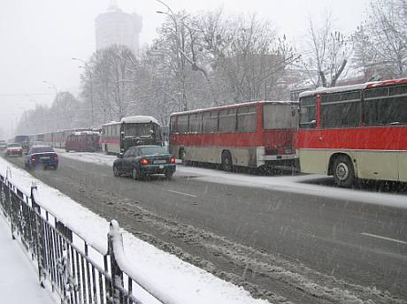

![[ Japanese flag ]](../kraiany/images/jp.png) |
 |
![[ Ukranian flag ]](../kraiany/images/uk.png) |

|
|
|
Галерея краян
Click on links below to see Kraiany Gallery
Фотогалерея Краян
Зареєструватись |
3й деньТретій день спротиву. Події на Майдані та біля ЦВКВ Україні третій день триває акція протесту проти фальсифікації виборів. Всю ніч на Майдані залишалося люди та 1 600 наметів. Також всю ніч тривала облога Банкової. О 10 ранку розпочався мітинг. 23:3843 автобуси міліцейських спецпідрозділів зосередилися на вулицях Інститутська та Шовковична. Ці вулиці знаходяться поблизу Майдану Незалежності і концентрація беркуту може сприйматися як підготовка до штурму позицій, зайнятих прихильниками Ющенка. 22:52В Українському домі на початку Хрещатика розмістився штаб, що координує дії учасників акції громадської непокори, що приїхали з регіонів України. Зараз на перших двох поверхах перебуває близько 2,5-3 тис. осіб, які можуть тут погрітися, поїсти й випити гарячого чаю. Близько 50 осіб роздають їжу й напої, а також займаються розселенням мешканців інших міст на квартирах у киян, які погодилися допомогти. У холі на 1-му поверсі висить папірець із написом "Штаб". Там же встановлені 2 телевізори, по яких транслюється "5 канал" і ТРК "Київ". Люди гріються, відпочивають, заряджають мобільники й дивляться телевізор. Адміністрація Українського будинку дала згоду на створення штабу. У будинку перебуває міліція, що не перешкоджає учасникам акції, а лише стежить за порядком. Люди перебувають там, але в них є можливість перебувати тільки на 1 й 2 поверхах, інші приміщення поки закриті, як і прохід на інші поверхи. 22:52О 10 годині вечора по проспекту Науки в сторону центру Києва пройшла колона з 20 автобусів, супроводжувана військовими машинами та автобусом, заповненими військовими. Як повідомляє кореспондент УП, в тому ж напрямку по проспекту проїхали 7 вантажівок без людей у супроводі міліцейської машини. Журналісти припускають, що у вантажівках – якась техніка, оскільки вони були тяжко завантажені. 22:32План першого етапу страйку команда Віктора Ющенка оголосить на мітингу на Майдані Незалежності у четвер. "Завтра на майдані люди це почують", - сказала Тимошенко в коментарі "Українській правді". "Будемо блокувати площі, дороги, залізниці. Наш перший крок буде залишатися для влади сюрпризом", - додала вона. Говорячи про наслідки середи, коли було оголошено результати виборів, Тимошенко сказала: "Сьогодні люди зрозуміли, що очікувати від будь-кого із людей при владі дотримання Конституції і закону – безперспективна справа". "Закінчилася межа, яка тримала людей від справжнього громадянського опору. З завтрашнього дня народ України об'являє повну непокору цій владі: не визнає оголошення Януковича переможцем, ніяких рішень ЦВК! І починає боротися конкретними заходами, щоб Ющенко зайняв своє місце". На мітингу соратник Тимошенко Олександр Турчинов сказав, що наступний збір – о 10 годині ранку на Майдані Незалежності. "Ми збираємося тут і крокуємо далі: майдан за майданом, будинок за будинком, місто за містом, регіон за регіоном!" "Ми сьогодні утримаємо Український дім – штаб нашого опору! Ми утримуємо Європейську площу, тому що Європа з нами!". Турчинов також попередив, що "ми продовжуємо блокування адміністрації президента, щоб жоден злочинець не міг туди заповзти". Він сказав, що нарада Кучми з губернаторами проходила в Пущі-Озерній: "Тому що ми блокуємо адміністрацію президента, і вони бояться туди зайти". "Чи може Янукович заповзти в адміністрацію президента? Ні! Тому що там стоять наші товариші. Ніколи Янукович повзки на карачках не заповзе в адміністрацію президента". Турчинов запропонував всіх присутніх на приводити у четвер з собою друзів і колег, що б на Майдані був мільйон чоловік. "Наш рух вже почав приносити перемоги, особливо у Києві. Ми з вами єдина армія. Нас вчора було на мітингу 200 тисяч, сьогодні 300 тисяч, завтра буде 1 мільйон". Томенко закликав частину учасників мітингу на Майдані Незалежності прямувати до адміністрації президента. Він зазначив, що біля адміністрації президента "хлопці і дівчата несуть вахту зранку і їм потрібна допомога". 21:39Юлія Тимошенко заявляє про те, що влада вчинила державний переворот, оголосивши Януковича президентом. "Сьогодні після рішення ЦВК відбувся державний заколот і ми ніколи не визнаємо президента Януковича", - сказала Тимошенко, звертаючись до учасників мітингу на Майдані незалежності у середу в Києві. "У нас є президент Ющенко і ми будемо за нього боротися", - наголосила вона. Тимошенко зазначила, що народ має знати поіменно заколотників, які здійснили державний переворот. "Це перш за все, Леонід Кучма, який не побачив скільки людей вийшло на вулиці міст і не скористався мінімальним правом навести лад в ЦВК, а освятив сфальсифіковане рішення", - сказала вона. "Так само нам відомі прізвища інших заколотників. Це Янукович, Медведчук, Пінчук, Білоконь, Васильєв. Тут Віктор Андрійович підказує, що слід додати Сергія Тігіпка, але це занадто дрібнувата фігура, на побігушках, навіть на повноцінного зрадника не тягне", - додала вона. Тимошенко також назвала список зрадників в ЦВК: Завалевська, Бондик, Данилевський, Донченко, Дубовик, Качур, Охендовський, Райковський, Рибачук, Ставнійчук. "А є ще в ЦВК продажна, залежна, невідповідальна людина – Ківалов. Ганьба!", - сказала лідер БЮТ, зазначивши, що ці люди зрадили не безкоштовно. Вона також назвала імена "патріотів України у ЦВК" , які "поставили себе під репресії", але не здалися": це Давидович, Князевич, Магера та член СПУ Чупахін. "Ці люди молодці!", - повторила Тимошенко скандування людей. Тимошенко повідомила людям, що не тільки український народ не визнає Януковича президентом. Вона розповіла, що кілька хвилин тому про невизнання українських виборів заявили США та низка країн Європи і висловила сподівання, що кожну годинку буде все більше країн, які не визнають вибори в Україні. "Саботаж буде повний, у нас є шанс для боротьби", - зазначила лідер БЮТ. Тимошенко заявила, що команда Ющенка стоятиме до перемоги. "Перш за все, завтра ми передаємо скаргу до Верховного суду, знаючи що це дуже не простий орган, невільний орган, але спробуємо переконати їх", - сказала соратниця Ющенка. "Але це не єдиний шлях по боротьбі з режимом, який не визнає ні закон, ні Конституцію, ми маємо розпочати боротьбу до руйнації цього режиму", - сказала вона. Вона зазначила, що у вівторок люди зробили спробу взяти в облогу Банкову, але відмовились через загрозу життю людей. "Ми перейшли кордон і побачили, що там знаходиться не тільки ОМОН, а й контингент іншої крани і офіцери попередили, що наші хлопці не будуть стріляти, але для іноземного контингенту були віддані накази раніше. Якщо більше 50 людей заходять на Банкову - відкривати стрільбу", - розповіла вона . "Ми маємо справу з кримінальними бандитами, які готові на все", - наголосила Тимошенко і закликала людей не діяти спонтанно, а лише за чітко узгодженим планом. "Ми маємо посилити сили, відпрацювати всі наші дії щодо облоги тих чи інших державних приміщень, блокування портів, доріг, залізниць. Але для таких заходів потрібен інший план ніж конституція, ви не повинні кидатися на амбразуру, а керуватися планом, який створять протягом доби-двох", - зазначила вона. "Я твердо знаю, що послідовно наш план буде здійснено". Вона нагадала, що грузинська революція тривала три тижні. "Думаю, українська триватиме не більше", - сказала Тимошенко. Вона також попросила людей не конфліктувати з так званими прихильниками Януковича, бо "це не справжні прихильники, а платні бандити". Вона попросила "м’яко переконувати їх у тому, що Київ не їх місце". Також Тимошенко звернулася до всіх військових "приходити й захищати свій народ, не дати захопити Україну антиконституційним шляхом". Наостанок Тимошенко побажала людям не втрачати віру. "Ніякого президента Януковича, ніяко песимізму, розправити крила і до перемоги", - побажала вона. 21:20Лідер "Нашої України" Віктор Ющенко оголосив про рішення провести всеукраїнський політичний страйк. Про це він заявив зі сцени під час багатотисячного мітингу на Майдані Незалежності в середу. За словами Ющенка, таке рішення було ухвалено під час координаційної ради блоків політсил, які підтримують його як кандидата в президенти, засідання якої відбулось в середу. "Декілька хвилин назад ЦВК 9 голосами сформувала кінцеві висновки по результатам виборів, де на два з лишнім відсотки мене опередив Янукович. Цим рішенням вони хотіли поставити нас на коліна, сказати, що ми бидло. Вони хотіли сказати, що попри все їхні маніпуляції беруть верх над людським голосом, над людською мовою", - заявив він. "Я вас благаю, - звернувся Ющенко до присутніх, - від цієї звістки ні в кого не повинна появитися жодна сльоза. Шановні друзі, влада зробила те, що ми її очікували. Вона крутиться, як вуж під вилами", - сказав він. Він також додав, що влада буде творити любе беззаконня, щоб здійснити генеральний план: довести до завершення здійснення перевороту. "Влада вибрала найпримітивніший шлях – шлях ескалації конфлікту. Вона не пішла на переговори, вона відкинула можливість проведення політичних переговорів і пошуку узгодженого рішення", - сказав він. "Шлях до компромісу через демонстрацію народом своєї волі – це єдиний шлях, який допоможе нам вийти з конфлікту. Тому комітет національного порятунку оголошує всеукраїнський політичний страйк. Це, шановні друзі, наша відповідь на те політичне безчинство, яке робить режим Кучми-Януковича", - сказав він. Ющенко також повідомив, що відповідальність за захист демократії в Україні на себе бере створений комітет національного порятунку. Виступаючи зі сцени після Ющенка, Мороз пояснив, що всеукраїнський страйк означає, що "ми звертаємось до свого активу на місцях, це означає, що наш актив організовує свідомих громадян". Також, за його словами, передбачаються зняття занять в школах, університетах та на підприємствах. 21:05В середу в аеропорту "Бориспіль" приземлилися два літаки, на борту яких знаходилися бійці російського спецназу "Вітязь". Про це повідомляє Центральний штаб Віктора Ющенка. За даними штабу, полковник Ляшенко, заступник командира авіаційної бригади по тилу, якому було доручено обслуговувати ці літаки, відмовився виконувати наказ. Він подав рапорт про відставку. Проте літаки таки приземлилися в "Борисполі". Бійці російського спецназу були привезені до міста Києва. Про місце їх дислокації наразі невідомо. Центральний штаб передав цю інформацію голові СБУ Ігорю Смєшку для проведення розслідування і водночас попередив керівництво Служби безпеки про необхідність вжиття заходів по захисту життя полковника Ляшенка, який опинився в небезпеці. Через півгодини керівник військової контррозвідки СБУ підтвердив по телефону, що полковник Ляшенко дійсно проходить службу у бориспільській авіаційній бригаді і за попередньою інформацією справді сьогодні подав рапорт про свою відставку, однак представник СБУ заперечив факт приземлення у Борисполі двох російських літаків. 20:55На залізничному вокзалі міста Донецька зібрано декілька тисяч людей для відправки до Києва. Як повідомив очевидець, серед тих, що зібралися, в основному чоловіки, багато хто з яких напідпитку. 20:50Прихильники Віктора Януковича виїхали від Центральної виборчої комісії. Як передає кореспондент агентства "Інтерфакс-Україна", у середу ввечері біля тисячі прихильників Януковича сіли в автобуси й виїхали. Вони залишили порожні агітаційні намети. Біля наметів догоряють розведені ними багаття. Перед від'їздом були дані кілька пострілів салюту. 20:20В Києві триває мітинг, на якому зібралися кілька сотень тисяч осіб, які чекають на прибуття Віктора Ющенка. Цей мітинг можна назвати наймасовішим з усіх які були до цього. Люди зайняли не тільки весь Майдан Незалежності, а також відрізок від Європейської площі, також натовп стоїть щільно вздовж Хрещатику а також на вул. Інституцькій до Банкової. Посередині Хрещатику створено коридор, по якому на мітинг має прибути Ющенко. Кількість мітингуючи можна оцінити десь в 250 тисяч. 19:05.Група прихильників Януковича вийшла з палицями до Майдану Група озброєних палицями людей, які відносять себе до прихильників Віктора Януковича, вирушила від Центральної виборчої комісії у напрямку майдану Незалежності. Як передає кореспондент УНІАН, частина людей, озброєних палицями, спустилася у метро "Печерська". Усі вони носять синьо-білі шарфи і, проходячи через турнікети метро "Печерська", скандують: "Янукович – наш президент!" і "Донбас 40% дає до бюджету України!". 18:57.Прихильники Януковича п'ють шампанське і стріляють у повітря Прихильники Віктора Ющенка, що мітингують на Майдані Незалежности в Києві направилися до Центральної виборчої комісії. Кілька хвилин назад голова ЦВК оголосив про перемогу на президентських виборах Віктора Януковича. Люди заповнили всю проїзну частину вулиці Інститутської. Вони скандують "Ющенко", "Ганьба ЦВК", "Нас багато і нас не перемогти!". Народний депутат Микола Томенко зі сцени заявив, що майдан - це "останній оплот української демократії". Майдан - це вся Україна й ми її не віддамо", - сказав Томенко. Тим часом більше 2 тис. прихильників Віктора Януковича проводять масову акцію під будинком ЦВК, викрикуючи його прізвище. Багато з них одягнені в червоні шахтарські каски. Люди тримають у руках прапори України й біло-блакитні прапори. Оголошення про перемогу Януковича на виборах юрба зустріла вигуками і скандуванням. Кілька людей стріляли у повітря із предметів, схожих на пістолет. Зараз люди розвели на площі кілька багать, збираються біля них групами, відкривають пляшки з алкогольними напоями, зокрема, із шампанським. По периметрі площа перед ЦВК оточена вантажівками із ґрунтом. На площі також присутня невелика кількість людей з жовтогарячими стрічками. Група прихильників Віктора Ющенка, чисельністю близько 50 осіб, перебуває на протилежній стороні бульвару Лесі Українки. 18:40. Новини про прихильників ЯнуковичаНа Бориспільський залізничний вокзал прибув потяг з 20 вагонів, з яких виходять люди кримінальної зовнішності, повідомили УНІАН у прес-службі депутатської групи "Солідарність" фракції "Наша Україна". Цих людей відразу садять в автобуси та відправляють до Києва. Близько 200 прибічників Віктора Януковича блокують підходи до Центральної виборчої комісії. Як передає кореспондент УНІАН, частина з них стоять на КамАЗах з піском поблизу входу у ЦВК, а також блокують підземний перехід на виході з метро "Печерська". Підходи до ЦВК також охороняють міліції і люди кримінальної зовнішності, деякі з яких напідпитку. На запитання, кого міліція охороняє, один з представників МВС відповів: "Ми не охороняємо. Нам наказують тут стояти". 17:38Станом на 17:30 прихильники януковича сіли в автобуси і поїхали в невідомомму напрямку. Зараз біля стадіону "Динамо" знаходиться близько тридцяти людей з прапорами Януковича. 17:04. Януковичці згортають наметове містечкоБільше 100 прихильників Януковича зібралися в головного входу на стадіон "Динамо" на алеї неподалік від Європейської площі. На алеї стоїть близько 5 автобусів типу "Ікарус", в яких також перебувають прихильники прем'єра. Ще якась кількість людей з біло-блакитними шарфиками й прапорами із символікою виборчої кампанії Януковича спускається з Маріїнського парку на площадку до стадіону "Динамо". Вони несуть із собою агітаційні намети в зібраному виді, які раніше стояли перед будинком Кабміну. 16:08 Бронетехніка під ЦВК в стані готовності.Біля будівлі Центральної виборчої комісії в Києві зібралися прихильники як кандидата в президенти Віктора Ющенка, так і прихильники кандидата в президенти, прем'єр-міністра Віктора Януковича. Як передає кореспондент агентства "Інтерфакс-Україна", число прихильників у підтримку Януковича становить понад тисячу, і їх більше, ніж прихильників Ющенка. Прихильники Януковича, які стоять із біло-блакитними прапорами, а також аналогічними шарфиками й символікою Януковича, вишикувалися щільною стіною в кілька рядів уздовж огорожі Центвиборчкому. При цьому вони заблокували ту частину огорожі, у якій перебуває прохід у ЦВК. Навіть представники преси проходять зі складностями працею в центр двору Центвиборчкому. Прихильники як Ющенка, так й Януковича також окупували завантажені ґрунтом і піском вантажні автомобілі, які щільним рядом стоять уздовж огорожі ЦВК. Прихильники обох кандидатів вилізли зверху на машини й махають прапорами із символікою обох кандидатів. Біля будинку ЦВК стоїть безперервний гул автомобілів. Уздовж огорожі Центвиборчкому із внутрішньої сторони, а також у проміжку між стаціонарним триметровим забором і тимчасовим півтораметровою огорожею несуть чергування бійці спецназу. Зі спецтехніки, яка стоїть у дворі ЦВКа, зокрема водометів і бронетранспортерів, знята маскувальна сітка, вони в стані готовності. Всередині двору також постійно переміщаються бійці спецназу в повному обмундируванні - у касках, наколінниках і бронежилетах, але без щитів. 16:05Близько 16 години на Майдані Незалежності почався мітинг Віктора Ющенка. Поруч із ним стоять боксер Володимир Кличко і співачка Руслана. Ющенко під час виступу зачитав заяву Михайла Горбачова: "Те, що відбувається в Україні – це свідчення того, що впала друга стіна". За словами Ющенка, Горбачов "високо оцінив демократичний процес в Україні". Він також розповів про заяви канцлера Шредера, який не визнав вибори недемократичними, і Єврокомісії, яка закликала відкласти оприлюднення результатів. Ющенко також розповів про порушення на виборах і сказав, що "це життя по-понятіям". "Вони хочуть, щоб ви не вчили пісні Руслани, а мурку". Ющенко сказав, що напередодні ввечері говорив з президентом Польщі Квасневським. "Вся Європа вимагає початку діалогу, а не привезення бандитів з Донецька". На мітингу мінімум 200 тисяч киян. 15:00Головна частина колони маніфестантів - прихильників Ющенка повертається на майдан Незалежності. Як передає кореспондент УНІАН, проходячи повз будинок Міністерства внутрішніх справ, маніфестанти скандували: "Міліція з народом!" та пов'язували помаранчеві стрічки на міліцейські автомобілі, розташовані там. Колона розтягнулася більш як на 1 кілометр. 14:50Колона маніфестантів, прихильників Віктора Ющенка після виходу до Бессарабської площі, пройшла вулицями Червоноармійською, Льва Толстого і вийшла на вулицю Володимирську. Як передає кореспондент УНІАН, представників правоохоронних органів у центрі Києва практично немає. Вони не перекривають дорогу, що доводиться робити самим маніфестантам. Рух транспорту у центрі практично блокований. 14:02Мітинг на підтримку Ющенка попри очікування не вирушив на Центрвиборчком, а завернув на вулицю Басейну. Очікується, що вони проведуть мітинг біля Національного університету ім. Шевченка. По всьому маршруту слідування колон блокується рух транспорту, однак водії не висловлюють невдоволення, а лише в унісон сигналять "Ю-щен-ко!" 13:45. Януковичці покинули свій табірУ наметовому містечку на підтримку Віктора Януковича практично немає його прихильників – зараз там знаходяться всього кількох осіб. Як передає кореспондент УНІАН, палаткове містечко розташоване напроти будинку Кабінету Міністрів України в нижній частині Маріїнського парку і складається з 20 порожніх торгових наметів, близько 100 маленьких наметів і 6 армійських наметів, середніх за розміром. Солдати вивантажують з КамАЗа ще партію армійських наметів. У таборі також встановлені 9 польових кухонь, одна з яких працює. Всюди на землі валяються біло-блакитні шарфи з символікою Януковича. У парку біля наметів перебувають прихильники Віктора Ющенка і намагаються переконати прихильників Януковича, що залишилися, перейти на їхню сторону. 13:45. До ЦВК масово стягають автобуси з людьмиЯк повідомляють кореспонденти УП, з боку Борисполя по Південному мосту направляються до центра 50 автобусів з донецькими номерами у супроводі міліції. А тим часом, по бульвару Лесі Українки рухаються 15 автобусів з заштореними вікнами й теж з донецькими номерами. Всі автобуси рухаються до центра міста, швидше за все до Центвиборчкому. 13:37100 тисячний натовп мирно пройшов повз Кабінет міністрів, скандуючи "Зека - геть!". На пагорбі напроти кабміну були розташовані агітаційні намети на підтримку Януковича, однак вони порожні. Біля них натовп пройшов повз Верховну Раду і вирушив вулицею Шовковичною. Рух заблоковано, однак водії продовжують сигналити в унісон "Ю-щен-ко!" 13:30Колони прихильників Ющенка вирушили з Майдану Незалежності вулицею Грушевського. Натовп заповнив вул. Грушевського. Автомобілі заблоковані всередині натовпу, але вони клаксонами сигналять в унісон "Ю-щен-ко!".Як повідомляє кореспондент УП, натовп мирно оминув невелике наметове містечко в парку на підтримку Януковича. В той же час за інформацією Уніан, 30 осіб з наметового містечка на підтримку Віктора Януковича перейшли на бік Віктора Ющенка. Про це сказав, виступаючи на Майдані Незалежності народний депутат Олег Тягнибок. За словами депутата, стати на бік Ющенка людей із наметового містечка на підтримку Януковича переконала група студентів із шести чоловік. Переговори про перехід на бік Ющенка відбувалися на території наметового містечка на підтримку Януковича. 12:20. Януковичці йдуть на ЦВКБлизько 2-3 тисяч прихильників Януковича вишикувалися в шеренги і прямують до будинку Центвиборчкому, де о 16 годині очікують оголошення стовідсоткових результатів виборів. Як передає кореспондент УП, частина "козаків" залишається в таборі. Прихильники Віктора Ющенка підійшли до наметового містечка на підтримку Віктора Януковича на розі Європейської площі і вулиці Грушевського та почали скидати біло-сині прапори. Вони скандують: "Ющенко!", "Україна наша!". Як передає кореспондент УНІАН, бійки немає. До натовпу підійшло близько 10 правоохоронців. Прихильники Ющенка почали скандувати: "Міліція з народом". Між тим, за повідомленням кореспондента УП, біля Музейного провулку 10, де знаходиться неформальний штаб на підтримку Януковича, поставили 2 МАЗи з піском. Звідти виходять люди, частина з яких – з оранжевою символікою. Тобто це можуть бути провокатори. Деякі з них мають на собі фіолетові стрічки. 11:40. Учасники акції розширюють територію свободиУчасники акції громадської непокори на підтримку Віктора Ющенка будуть розширювати територію своєї присутності в Києві, щоб довести, що "з ними - весь Київ, а не тільки Хрещатик". Зокрема, у середу в Києві на Майдані Незалежності керівник акції, народний депутат Юрій Луценко (фракція Соцпартії) організував відправлення представників Львова до Українського будинку, на верхню площадку над будинком. За його словами, найближчим часом він звернеться із проханням до представників інших регіонів України відправитися з Хрещатика "в інше місце Києва", повідомляє Інтерфакс-Україна. Учасники акції громадського опору - представники Київської області спрямовані на заміну й підкріплення тих, хто стоїть під адміністрацією президента України на вулиці Банковій. Луценко закликав жителів Київської області відправитися до готелю "Україна", де їхні подальші дії будуть координуватися народними депутатами Володимиром Яворівським й Андрієм Шкілем. "Ви йдете на заміну й підкріплення людей, які стоять на вулиці Банковській. І йдете з нашим гаслом "Ющенко!", - сказав він. Луценко також повідомив, що в цей час триває засідання центрального штабу Ющенка, зокрема, вже є рішення про створення комендатури акції. "Комендантом призначений Роман Безсмертний, і він уже приступився до виконання своїх обов'язків", - сказав Луценко. Він також закликав киян приносити на площу тепле взуття для учасників акції. За словами Луценка, в районі Нацбанку будуть знаходитися представники Тернопільскої, Дніпропетровскої, Волинскої, Запорожської областей. Координаторами цієї групи будуть Артеменко, Полянчич, Зубов. "Територію свободи поширюємо на всю центральну частину Києва", заявив Микола Томенко. Він сказав, що Майдан Незалежності "вже наша територія". Томенко також повідомив про прибуття до Києва відомих грузинських та російських виконавців, які "хочуть підтримати Україну піснями свободи". "Наша Україна" пише план Народний депутат Микола Томенко говорить про розробку плану дій опозиції на найближчий час, що зараз обговорюється на засіданні Національного комітету із захисту Конституції, створеному при кандидаті в президенти Вікторі Ющенку. Відкриваючи в середу в Києві мітинг на Майдані Незалежності, він заявив, що в цей час це засідання триває. "Як тільки засідання закінчиться, Ющенко, як наш президент, буде говорити нам, що ми будемо робити сьогодні", - сказав Томенко. Томенко сказав, що Ющенко буде проводити переговори тільки з Леонідом Кучмою. "Ми не підемо на переговори з гавришами, шуфричами, януковичами", - сказав він на ранковому мітингу в Києві. Томенко також сказав, що Кучма в середу виїжджає в Росію на зустріч із Путіним. "Якщо президент із російськими олігархами - нехай залишається в Петербурзі", - сказав Томенко. Він також повідомив, що кількість установ, підприємств і вузів, що оголосили про страйк, збільшується по всій Україні. "Сьогодні вся Україна - з нами", - сказав він. Крім того, за словами депутата, у Київ прилетів підтримуючий Ющенка боксер Володимир Кличко, що у середу буде на Майдані Незалежності, там також, за його словами, буде співачка Руслана. Разом з тим Томенко застеріг присутніх у зв'язку з тим, що "влада розстроєна і йде на заходи, які можуть спричинити серйозні конфлікти". У зв'язку із цим він закликав учасників акції не піддаватися на провокації й виявити максимальну толерантність, до людей, "яких привезли" у підтримку Віктора Януковича. По оцінках організаторів акції, у цей час на Майдані Незалежності перебуває близько 70 тис. чоловік, повідомляє "Інтерфакс-Україна". Виступаючи перед мітингом, народний депутат Григорій Омельченко закликав голову СБУ Ігоря Смєшка як свого учня стати на бік народу. Він також попросив його перевірити інформацію про передислокацію російських військ в Україну і в разі підтвердження звільнити Україну від окупантів за допомогою спецпідрозділу "Альфа". Також він звернувся до Білоконя з попередженням, що в разі застосування силового варіанту, його місце "в кращому випадку буде біля параші". ЦВК загородили Камазами, у ющенківців на Банковій паспортний контроль  Будівля Центральної виборчої комісії забарикадована по периметру КамАЗами з піском. Машини стоять на проїжджій частині навколо ЦВК. Біля адміністрації Президента України прихильники Віктора Ющенка встановили 30 наметів з боку вул.Інститутської. Сюди продовжують стікатися люди, зараз їх вже понад півтисячі. Водночас посилено заходи безпеки. Організатори, вишикувавшись у ланцюги, пропускають на вул. Банкову людей лише за наявністю паспортів. Крім того, вони роблять візуальний огляд, оскільки з'явилася інформація про можливість появи провокаторів зі зброєю у кишенях. Підхід до адміністрації Президента продовжують перекривати три самоскиди "КрАЗ". Люди перебувають як перед ними, так і на них, і за ними. Вони скандують: "Ющенко!", а також "Ми не козли, ми – народ!". Біля наметів розташовані імпровізовані пункти харчування. З боку вулиці Лютеранська біля адміністрації Президента перебувають 150 прихильників Ющенка, повідомляє УНІАН.
|